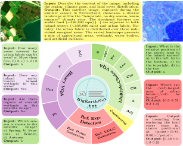
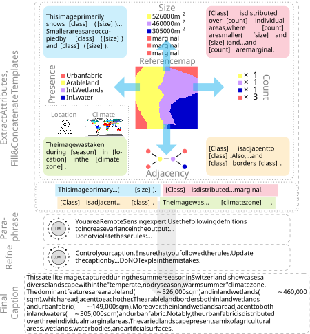
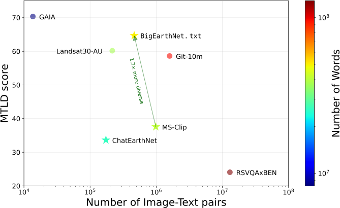
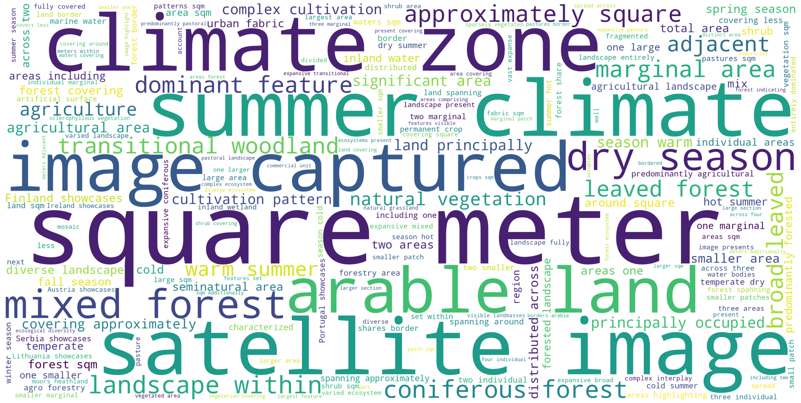

BigEarthNet.txt comprises 464 044 co-registered Sentinel-1 (S1) and Sentinel-2 (S2) images with diverse text annotations, resulting in a total of ∼9.6 million S1-S2-text triplets. The dataset supports 15 tasks (Presence, Area, Counting, Adjacency, Relative Position, Country, Season, and Climate Zone, denoted as Pr, A, Cnt, Adj, RP, Loc, S, and Clt, respectively) across 4 broad categories.
Abstract
Vision-language models (VLMs) have shown strong performance in computer vision (CV), yet their performance on remote sensing (RS) data remains limited due to the lack of large-scale, multi-sensor RS image-text datasets with diverse textual annotations. Existing datasets predominantly include aerial Red-Green-Blue imagery, with short or weakly grounded captions, and provide limited diversity in annotation types. To address this limitation, we introduce BigEarthNet.txt, a large-scale, multi-sensor image-text dataset designed to advance instruction- driven image-text learning in Earth observation across multiple tasks. BigEarthNet.txt contains 464 044 co-registered Sentinel-1 synthetic aperture radar and Sentinel-2 multispectral images with 9.6 M text annotations, including: i) geographically anchored captions describing land-use/land-cover (LULC) classes, their spatial relations, and environmental context; ii) visual question answering pairs relevant for different tasks; and iii) referring expression detection instructions for bounding box pre-diction. Through a comparative statistical analysis, we demonstrate that BigEarthNet.txt surpasses existing RS image-text datasets in textual richness and annotation type variety. We further establish a manually-verified benchmark split to evaluate VLMs in RS and CV. The results show the limitations of these models on tasks that involve complex LULC classes, whereas fine-tuning using BigEarthNet.txt results in consistent performance gains across all considered tasks.
Overview

Caption generation process for BigEarthNet.txt: i) Attribute extraction from the reference map and template filling based on the attributes and metadata such as location, season and climate zone information, followed by concatenation of the templates; ii) increasing linguistic variance and ensuring correctness via self-refinement.

Comparison of existing image-text RS datasets in terms of size and semantic richness of the text data. The Natural Language Toolkit (NLTK) word tokenizer is used to divide the captions and questions into tokens. The color of each point indicates the total number of tokens in the dataset. Datasets that encompass images with more than three spectral bands are denoted with a star. The BigEarthNet.txt dataset is 1.7× more diverse compared to the largest existing RS dataset encompassing more than three bands. The only dataset that is more diverse (GAIA) is significantly smaller.

Word cloud of the most-common words in the BigEarthNet.txt dataset. The size of each word is proportional to its frequency in the dataset. The most common words are related to land-use/land-cover classes, their spatial relations, and environmental context.
Experimental Results
Comparison with Existing RS Image-Text Datasets
Paper
Citation
J. Herzog, M. Adler, L. Hackel, Y. Shu, A. Zavras, I. Papoutsis, P. Rota, B. Demir, "BigEarthNet.txt: A Large-Scale Multi-Sensor Image-Text Dataset and Benchmark for Earth Observation", Arxiv Preprint arXiv:2603.29630, 2026.
@article{Herzog2026BigEarthNetTXT,
title={BigEarthNet.txt: A Large-Scale Multi-Sensor Image-Text Dataset and Benchmark for Earth Observation},
author={Johann-Ludwig Herzog and Mathis Jürgen Adler and Leonard Hackel and Yan Shu and Angelos Zavras and Ioannis Papoutsis and Paolo Rota and Begüm Demir},
journal={Arxiv Preprint arXiv:2603.29630},
year={2026},
}The BigEarthNet.txt dataset is licensed under the Community Data License Agreement - Permissive, Version 1.0.